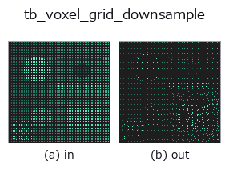

typed op• 数据种类:points → points
• 调用:fullseye.apply(img, "tb_voxel_grid_downsample", a=0.5, b=0.5)(2-D 的模型是一张图 + 两个标量旋钮 a,b∈[0,1])

*图为在 128×128 合成输入上实际运行的输出。左为输入，右为输出。点云以俯视散点显示(亮度 = z)，一维序列为折线，体数据为沿 z 的最大值投影，视频为中间帧，复数图像为幅值；无法成像的返回值直接显示数值。*
*旋钮 a 不改变输出(实测: 0.1 / 0.5 / 0.9 相同)。*
*旋钮 b 不改变输出(实测: 0.1 / 0.5 / 0.9 相同)。*
阶段(前置算子 → 本算子，从左到右):
▸ tb_voxel_grid_downsample: 处理阶段 (文档网站)
换别的图像(合成场景 / 照片 / 硬币。上排为输入，下排为对应输出。旋钮取默认):
▸ tb_voxel_grid_downsample: 其他输入图像 (文档网站)
用边长为 voxel_size 的格子对点云进行抽稀，将每个格子聚合为一个重心点（确定性算法）。
把空间划分为边长 voxel_size 的立方体单元,落入同一单元的点由其质心 1 点代表。是均匀化密度不均、按点数抑制下游(ICP、特征量)计算量的标准方法。输出顺序固定为体素坐标的字典序(相同输入总是得到相同输出=确定性)。
points : array_like, shape (N, 3)
输入点云。
voxel_size : float
单元的边长(> 0)。越大抽稀越强。
ndarray, shape (M, 3)
各占用单元的质心(M <= N)。全部落在输入的轴平行 bounding box 内。
voxel_size <= 0 时 ValueError。空输入返回空的 (0,3)(graceful)。质心是单元内点的平均,因此必定落在输入点的凸包(因而在 bbox)内。
桥接到 2-D 进化注册表的 3d op voxel_grid_downsample。实现相同,只有调用约定改为 op(v, a, b)。此 op 没有可调点,a 和 b 都不使用。
• 示例数据目录(下载 URL / 许可证) —— 2-D 用 skimage.data(BSD/公有领域)加合成图,3-D 给出真实数据源(Stanford/PDS 等)的下载 URL。
• 算子来历与参考文献 —— 该算子族所依据的研究/方法出处。
下面的程序已确认可以运行(与图相同的输入)。在 Studio 帮助中，此块会变成按钮，可当场加载并运行。
img_to_points 0.50 0.50 tb_voxel_grid_downsample 0.50 0.50
下面的示例调用的是底层账本算子 voxel_grid_downsample。此桥接算子只是把同一实现适配为 fn(v, a, b) 约定，行为完全相同(只是调用形式不同)。
• pointcloud_downsampling — py -3.11 examples_3d/pointcloud_downsampling.py
points 作为输入)identity · tb_points_to_voxel · tb_estimate_point_normals · tb_iss_keypoints · tb_project_points · tb_render_point_depth · tb_statistical_outlier_removal · tb_radius_outlier_removal
typed)tb_points_to_voxel · tb_estimate_point_normals · tb_iss_keypoints · tb_project_points · tb_render_point_depth · tb_statistical_outlier_removal · tb_radius_outlier_removal · tb_mls_smooth
*Provenance: ops.py — 2D 算子登记表。本条目由 tools/opdocs.py md 自动生成(请勿手工编辑)。*
© 2026 Kazufumi Furuse — Fullseye operator documentation. Licensed under Apache-2.0.